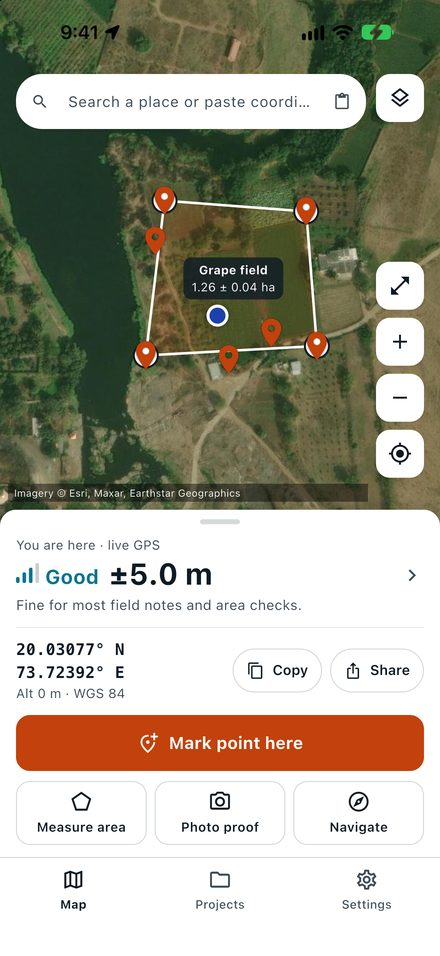
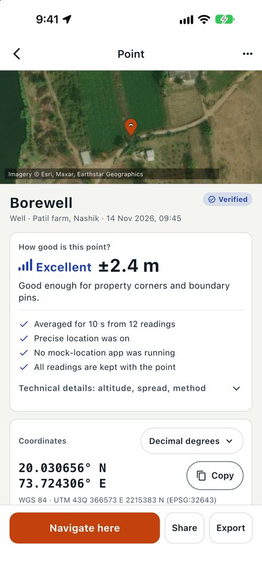
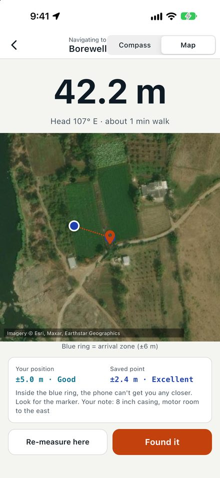
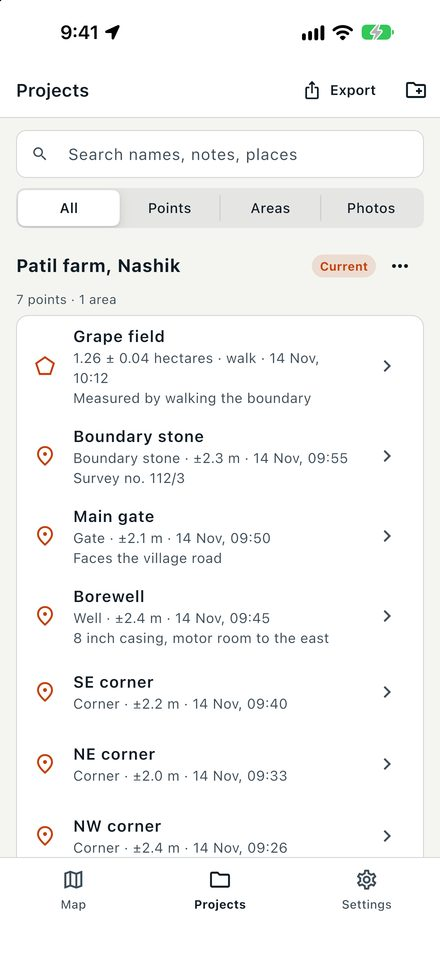

Measure land with your phone.
Walk the boundary or tap the corners on the map. Get the area in bigha, guntha, acre or hectare, with an honest ± so you know how close it is.

What FixPoint does
Land area
Walk around a field or tap its corners. Area, perimeter and side lengths, in your state's units.
GPS points you can trust
Averages readings and rates each point Excellent, Good, Fair or Poor, with ± metres.
Photo proof
Photos stamped with coordinates, time and accuracy, for site visits and records.
Find it again
Walk back to a boundary stone, borewell or gate with distance and direction.
Share and export
Excel, PDF, KMZ for Google Earth, GPX, CSV, GeoJSON, Shapefile and DXF.
Private
No account, no ads. Your fields, points and photos stay on your phone.
Screens




Convert land units
How many square feet in a bigha? It depends on the state. Use the land unit converter for bigha, guntha, kanal, marla, cent and more, or read how to measure land with your phone.
Questions
How accurate is it?
Modern phones usually give 2 to 5 metres in the open. FixPoint averages readings and shows the ± for every point and every area, so you can see how close the result is. Stand away from walls and trees and wait for "Excellent" (within 3 m) before marking a corner.
Which land units does it support?
Hectare, acre, square metres and square feet everywhere, plus local units by state: bigha, biswa, katha, kanal, marla, guntha, cent, ankanam and ground. It always shows acres or hectares next to local units.
Does it work without internet?
GPS works without signal. Save the street map or satellite overview of your area in advance to see the map offline too.
Is it free?
Yes. No ads, no account, no subscription.
Can I use it for land registry?
FixPoint gives a good estimate with its stated accuracy. For legal records, use an official survey.